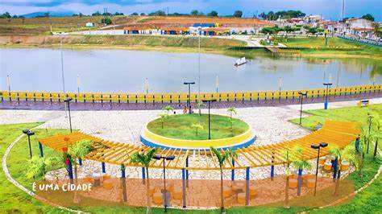

Moita Bonita
História
A sede do município originou-se do antigo povoamento “Alto do Coqueiro”, uma pequena aglomeração de sítios em terrenos elevados e repletos de coqueirais. O início da ocupação da região começou no século XVII, com a concessão de sesmarias pelo Capitão-Mor da província Manuel de Miranda Barbosa a agricultores, para o povoamento das circunvizinhanças de Itabaiana. A partir daí, o desenvolvimento local foi muito lento (na década de 50 do século XX, a região possuía somente quatro grandes famílias de moradores). O acesso a outras regiões se dava por estradas precárias por carro de boi ou em montarias.
Os primeiros proprietários de sítios existentes no local onde hoje é a sede do município de Moita Bonita foram: Manoel de Vergílio, João de Clarinha, Agenor Lima, Miguel Orelha, Clara Pinto Frito (apelido), Umbelino Barreto, Barnabé, Sabino, Sérgio de Anjinho, etc. Algum tempo após foi construída a capelinha e deram a Santa Terezinha o título de padroeira. Os fundadores desta pequena igrejinha foram os antigos moradores do Alto do Coqueiro. Com a elevação do Povoado à categoria de vila, a capelinha foi ampliada. Com o desenvolvimento gradual da localidade, outras residências foram surgindo aos redores da capela, entre elas a casa de Zeca Carrapicho, Pedro Crescencio, Antônio Barreto, José Costa, Domingo Crescencio, Pedro Carrapicho, José Barbosa, o Mercado de Talho, Fabrisco, etc. A sede do município de Moita Bonita teve origem no local onde foi construída a igrejinha de Santa Terezinha, hoje praça Santa Terezinha. Outras ruas e avenidas foram surgindo aos arredores da praça, como: Avenida Eliziário Menezes, Rua Belizário Góis, Domingos Pereira, Nossa Senhora das Dores, Ribeirópolis, e outras.
Foi construída a Escola Rural do Povoado Centro, hoje Escola Municipal Terezinha Santana dos Santos, que funcionava com uma sala de aula e dependências para professores (naquela época os professores vinham de outros lugares). As primeiras professoras foram: Maria Percília de Jesus Carvalho, Cícera Santana, Leonor Costa, Lourdes Maciel, Maria Lourdes Barbosa, Luzinete, Albertina e Terezinha Santana dos Santos, vindos de outras localidades além de Maria da Glória Costa que depois passou a ensinar em prédio próprio a “Escola Antônio Barbosa camponês”. Existia antes na comunidade, um professor particular conhecido por “Zé Mestre”. Em 1957, o povoado de Moita Bonita foi elevado à categoria de vila. O local foi se desenvolvendo, porém pertencia ao município de Itabaiana, que tinha naquela época como chefe político Euclides Paes Mendonça, natural de Serra do Machado (Ribeirópolis), grande rival político e inimigo do seu irmão Pedro Paes Mendonça, então Deputado Estadual, que foi o idealizador da Lei Estadual nº 1.165 de 12 de março de 1963 que criou o município de Moita Bonita, emancipando-o definitivamente do Município de Itabaiana. A população Moitense é formada de 3 etnias: O branco, elemento vindo do continente Europeu, especialmente de origem portuguesa; O índio, elemento nativo (a região do Capunga era uma aldeia indígena) e o negro de origem africana, que trabalhava nos engenhos de açúcar, já extintos na região. Por exemplo: no engenho pertencente ao Sr. Benvindo de Joana, localizado no pé da Serra do Carcará. Produzia açúcar em barra e o melaço (cabaú). A maior influência do elemento negro está na região de Pai Mandú e Serrinha, localidades que no passado havia o predomínio do elemento negro, visto que o engenho de açúcar ficava próximo. Ainda hoje, há no local as ruínas do antigo engenho situado no sopé da Serra do Carcará, as antigas caldeiras, onde o açúcar e o melado eram produzidos.
fonte: https://moitabonita.se.gov.br/Dados Gerais de acordo com o IBGE
| Prefeito (a) | Vagner Costa da Cunha |
| Site do município | https://moitabonita.se.gov.br/ |
| Área territorial | 95,416 km² |
| População estimada | 11.361 pessoas |
| Densidade demográfica | 114,81 hab/km² |
| IDHM | 0,587 |
| PIB per capita | R$ 18.14,47 |